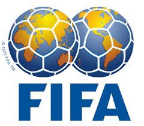

소개
FIFA 월드컵(영어: FIFA World Cup)은 축구 국제 기구인 국제 축구 연맹(FIFA)에 가맹한 축구 협회(연맹)의 남자 축구 국가대표팀이 참가하는 국제 축구 대회이다. 일반적으로 월드컵 축구나 월드컵이라고도 한다.
4년마다 열리는 월드컵은 1930년에 첫 대회가 열렸다. 1942년과 1946년 대회는 제2차 세계 대전으로 인하여 열리지 못했다. 대회는 예선 무대와 본선 무대 등 두 부분으로 나뉜다. 예선 무대는 본선에 진출할 32팀을 가려내기 위해 본선 보다 3년 일찍 시작한다. 현재 본선은 개최국 경기장에서 한 달 남짓 서른두 개 팀이 우승을 놓고 경쟁하는 방식으로 진행된다. 월드컵 본선은 세계에서 가장 많은 사람이 시청하는 스포츠 행사이다. 어림잡아 7억 1,510만 명이 2006년 FIFA 월드컵 결승전을 시청했다고 한다. 총 20번 대회가 열리는 동안 8팀이 우승을 차지했다. 가장 우승 횟수가 많은 팀은 브라질로 총 다섯 번의 우승컵을 들어올렸다. 그 다음으로 이탈리아와 독일이 네 번, 그리고 초대 우승팀인 우루과이와 아르헨티나가 각각 두 차례씩, 잉글랜드와 프랑스, 스페인이 각각 한 차례씩 우승을 차지했다. 네덜란드는 준우승만 3번(1974·1978·2010)했다. 2014년 FIFA 월드컵은 2014년 6월 12일부터 7월 13일까지 브라질에서 열렸고, 독일이 우승했다. 그리고 이번 2018년 FIFA 월드컵은 러시아에서 개최되며, 2022년은 카타르, 2026년은 캐나다/멕시코/미국에서 개최된다. 세계적인 종합 스포츠 행사 중 하나인 올림픽과 달리 월드컵은 단일 종목 대회다. 그리고 올림픽은 고대 도시국가 그리스의 전통을 따라 한 도시를 중심으로 개최되지만, 월드컵은 한 나라를 중심으로 열리며 대회 기간은 올림픽이 보통 두 주 동안 열리는데 비해 월드컵은 약 한 달 동안 진행된다.